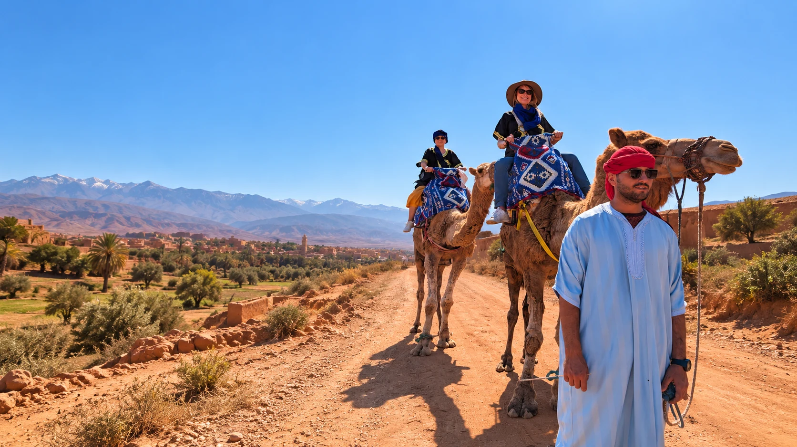
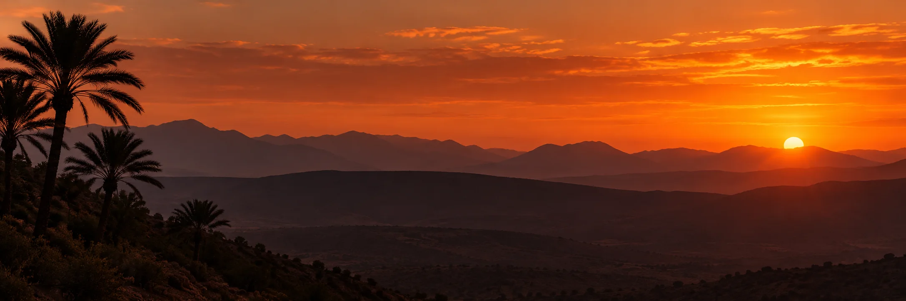

★★★★★
“Our guide Ahmed made the trip, he shared so much insight into the local culture and ensured we all had the best time.”
Ffion hopkinGoogle reviewer

Discover authentic experiences with people who call Agadir home. Small groups, unforgettable landscapes, and moments beyond the usual tourist trail.
Six local favorites, from mountain pools and city streets to desert trails and sunset rides.
 MOST POPULAR
MOST POPULARSwim in natural pools and explore a beautiful mountain oasis.
 LOCAL CULTURE
LOCAL CULTUREKasbah, souk and La Medina entrance included. Add the cable car for €10.
 DAY TRIP
DAY TRIPDiscover the red city's lively souks, palaces and streets.
 ADVENTURE
ADVENTURERide desert trails and enjoy the landscapes beyond Agadir.
 HIDDEN GEM
HIDDEN GEMExplore a hidden canyon, coastal villages and golden dunes.
Slow down and take in the coast in the evening light.
Browse our tours and find your perfect experience.
Contact us on WhatsApp and confirm the details.
We’ll pick you up and take care of the rest.
54 Google reviews checked 25 Oct 2026
View the current rating on GoogleSelected excerpts from public Google reviews. Open each review to read it in full.
“Our guide Ahmed made the trip, he shared so much insight into the local culture and ensured we all had the best time.”
“Our guide was really knowledgeable about everything and kept us entertained with his friendly, humerous manner.”
“Amazing experience with the driver Soufiane, very knowledgeable and got to see a variety of animals…”
 Discover the
Discover theGet inspired with our latest guides, tips and stories from Agadir and beyond.

Free cancellation · Book with confidence